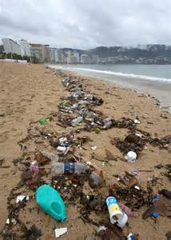

Sewage and Beach Pollution

One of our greatest natural resources has become a garbage dump—and the results are taking a toll on human and marine health. Billions of pounds of pollution end up in our oceans each year, and the majority of it comes from human activities along the coastlines and inland.
Understanding the devastating effects of pollution on our beaches is the first step to fixing the problem.
Beach pollution is any harmful substance that contaminates our coasts, ranging from plastic, trash, and litter to sewage, pesticides, and oil. Excess amounts of natural substances, such as nitrogen and phosphorus from fertilizers and animal waste, are also pollutants.
Serious Risks
Polluted beaches pose a serious health risk for people who come in contact with dirty water or sand. Ten percent of all water samples collected in 2013 from 3,500 coastal and Great Lakes beaches failed to meet the EPA’s most restrictive benchmark for swimmer safety. The EPA estimates that up to 3.5 million people get sick from being in contact with sewage while swimming;
children are the most vulnerable because they tend to swallow more water. Bacteria, fertilizers, animal and human waste, and trash can cause a range of illnesses for beachgoers. The most common is an upset stomach, but swimmers can also suffer neurological disorders, respiratory ailments, pinkeye, earaches, meningitis, and hepatitis. People with compromised immune systems, small children, and seniors may even be at risk of death.
Because there is a lag between contact with contaminated waters and onset of symptoms, most people don’t even realize it was the beach that caused their illness. One study found that people can get sick without even going into the water—contact with polluted beach sand was enough exposure to sicken them.